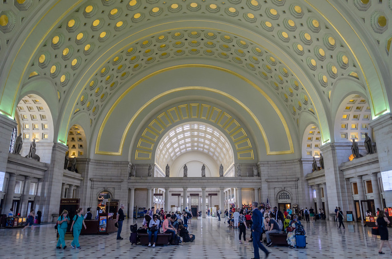
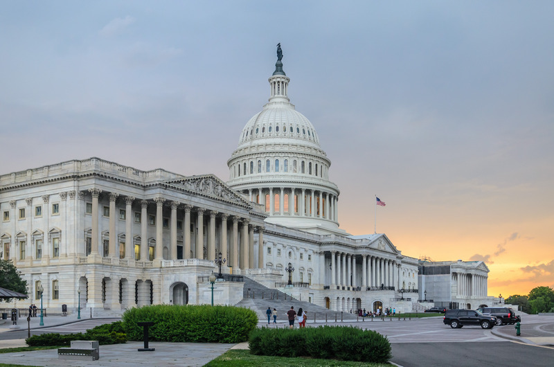
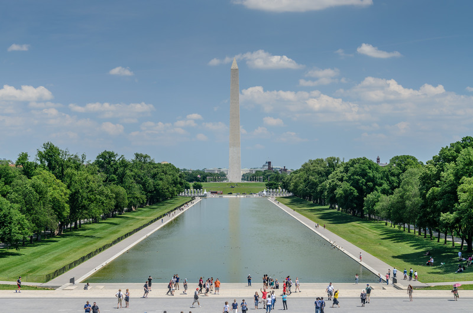
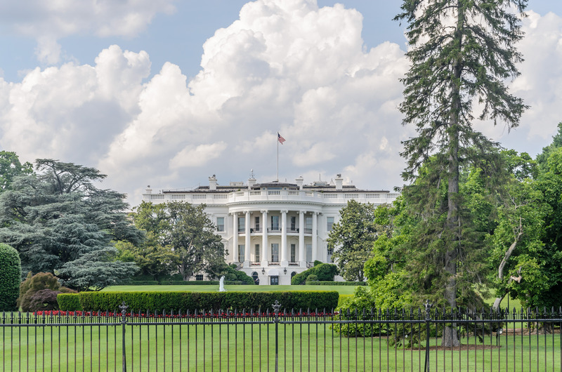
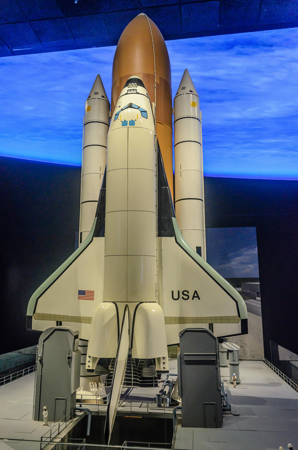
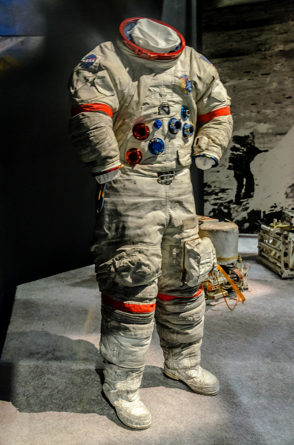
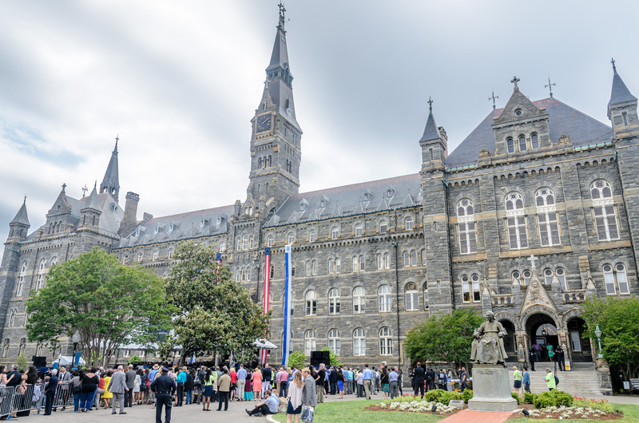
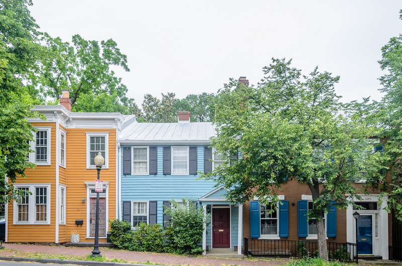
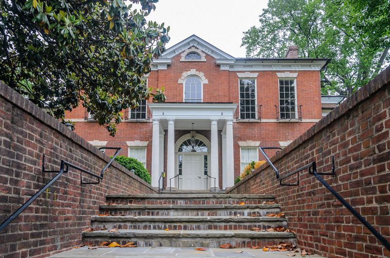

Tak jsem se zase po delší době rozhodla zavzpomínat na naši dovolenou v Americe, konkrétně na návštěvu Washingtonu, kde jsme strávili necelé 4 dny. Můžu říct, že ze všech tří měst, která jsem zatím v USA viděla, mě právě Washington okouzlil nejvíc. Svou čistotou, relativním klidem, zelení i typickou “barevnou” architekturou.

Pro přesun z NYC do Washingtonu jsme zvolili Bolt bus, který odjíždí z newyorské Penn station, a cesta s ním utekla rychle a příjemně. Vyklopil nás na nádraží Union station, a dál už jsme pokračovali pěšky do naší Airbnb ubikace. Dorazili jsme už vpodvečer, ale i tak jsme neodolali alespoň malé procházce po okolí a stihli jsme si prohlédnout okolí Capitolu, ještě než se přiřítila bouřka :-)

Na druhý den nás čekal asi nejparnější den naší dovolené, na který jsme (ne příliš strategicky :-) naplánovali procházku po Mallu - hlavní třídě s nejvýznamnějším památkami, kde se před sluncem není moc kam schovat. Cestu jsme zahájili u budovy Nejvyššího správního soudu, pokračovali znovu ke Capitolu, minuli budovy muzejí, o nichž tu ještě bude řeč, Washington’s monument, známý z řady amerických filmů, a památník obětem II. světové války a nakonec završili naše putování u pompézního Lincoln’s memorial, který vás možná překvapí svou velikostí.

Po této vyčerpávající štrapáci bylo nutné doplnit energii na obědě a poté jsme samozřejmě museli vyrazit ještě nakouknout k Bílému domu, kde toho času úřadoval Donald Trump 8-) Poslední zajímavou budovou, kterou jsme po cestě zpět domů míjeli, byla centrála FBI, kterou Péťa neomylně poznal z filmů :D

Následující den jsme prakticky celý věnovali návštěvě Air and Space Museum, které je skutečně rozsáhlé a fascinující. Najdete tu nejrůznější informace a artefakty ohledně létání do vesmíru, “Space Race” - soupeření mezi USA a SSSR, kdo dobude vesmír jako první či zajímavosti z historie letectví. Můžete si zde prohlédnout reálný kokpit, letoun bratří Wrightů, letadla z II. světové války i vesmírné raketoplány.

Péťa byl nadšený z modelu lodi Enterprise ze Star Treku. Já zase z kousku měsíce, na nějž si můžete dokonce i sáhnout :-)! A takových a podobných perliček (nejen) pro vesmírné fanoušky zde naleznete desítky - třeba skafandr Jurije Gagarina či kosmonautů NASA :-)

Náš poslední celý den ve Washingtonu jsme zasvětili návštěvě historické čtvrti Georgetown, kam jsme se přesouvali metrem. Georgetown je oblast se svéráznou architekturou ve federálním stylu. Naleznete zde jednu z nejlepších amerických vysokých škol, Georgetown university, kam jsme se zrovna nachomýtli k ceremoniálu promocí :-)

Washington se může pochlubit celou řadou zajímavých historických budov. Jednou z nich je třeba Old Stone House - nejstarší nezměněná budova v DC pocházející z roku 1765, která je také poslední předrevoluční koloniální budovou Washingtonu na původním základě. Část prostor je volně přístupná. Nás vevnitř zaujalo měřítko, kde se můžete podívat, kolik měřila třeba průměrná americká žena v 18. století (zhruba tolik jako já :D) či se můžete poměřit s některým z amerických prezidentů.

Dalším architektonicky zajímavým místem, které jsme navštívili, bylo sídlo ve federálním stylu Tudor Place, hřbitovní kaple Oak Hill s přilehlým hřbitovem či Dumbarton House. Na krásné a reprezentativní budovy tu ale narazíte prakticky na každém kroku. Zdejší typická architektura je prostě mimořádně fotogenickou pastvou pro oči.

A zde už naše procházka Washingtonem končí. Příště se můžete těšit zase na Boston, který se stal dalším bodem na našem pomyslném bucket listu ;-)